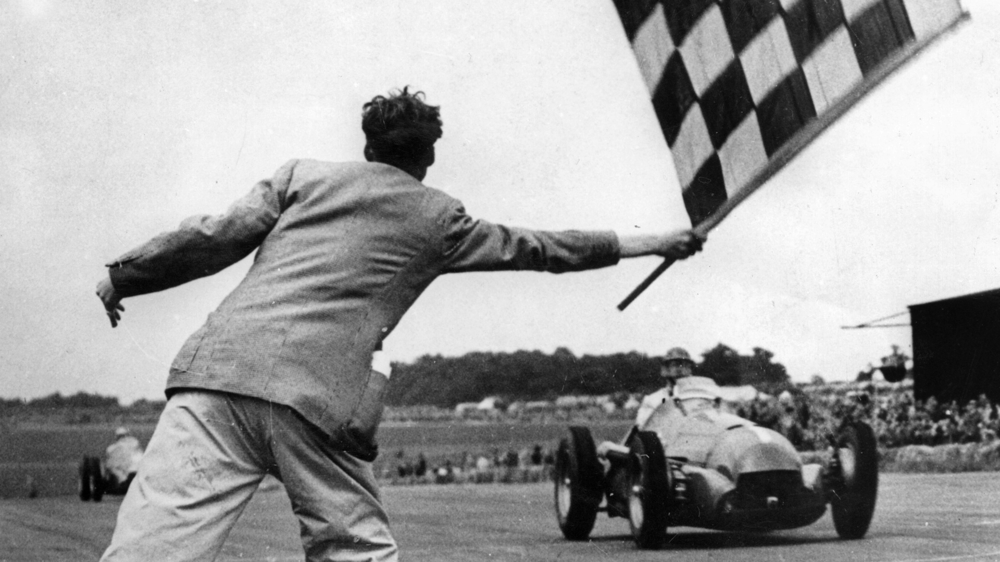
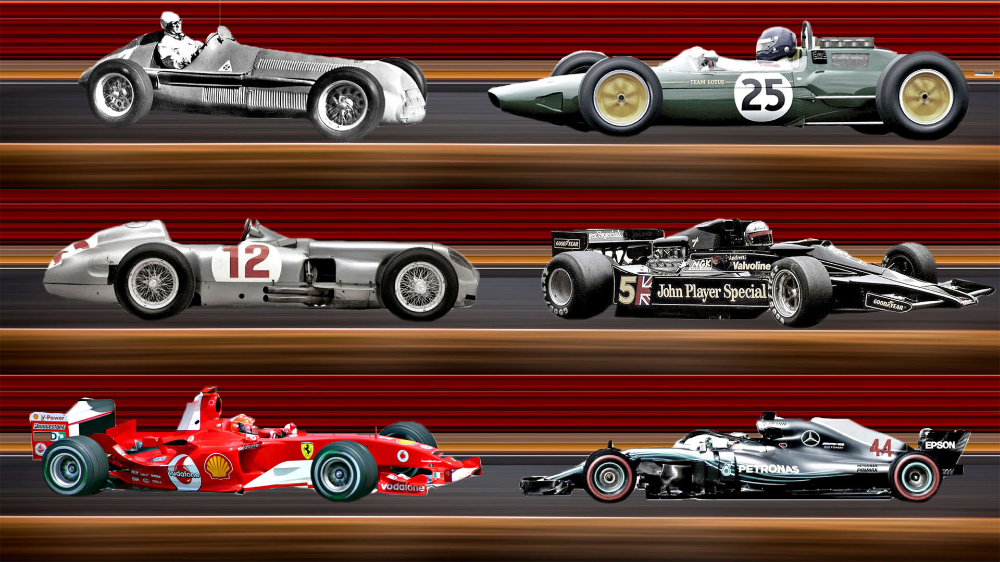
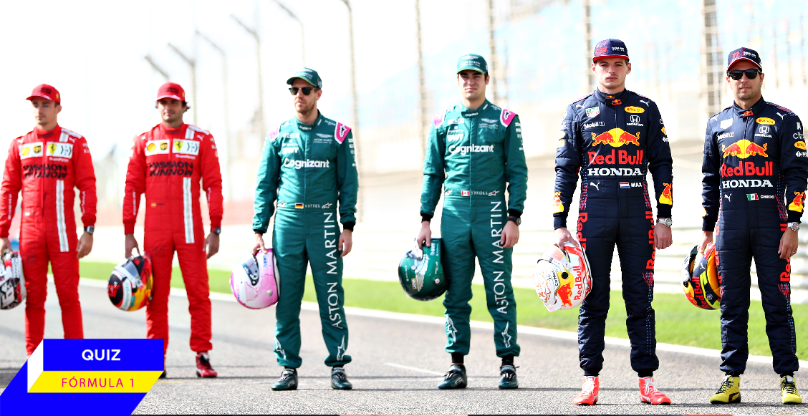
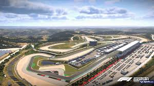
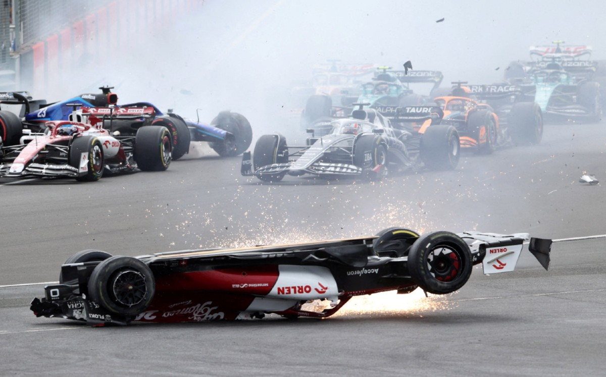

Historia de la Formula 1
Conocida como la categoría reina del automovilismo, tiene una historia rica y fascinante que se remonta a varias décadas atrás. Desde sus inicios, esta disciplina ha evolucionado enormemente, convirtiéndose en un deporte de élite que combina velocidad, tecnología avanzada y una gran destreza de los pilotos.

Orígenes y Evolución
Primeras Carreras: Las primeras competiciones de automovilismo se organizaron en la Europa de los años 20. No fue hasta 1950 que se estableció la Fórmula 1 como un campeonato mundial formal. Este evento inaugural se celebró en el Gran Premio de Gran Bretaña en Silverstone.
Décadas de 1960 y 1970: La tecnología avanzó significativamente, con mejoras en aerodinámica y motores. Grandes rivalidades entre pilotos como Ayrton Senna y Alain Prost marcaron esta época.
Era Moderna: Desde 1980 en adelante, la Fórmula 1 vio la llegada de tecnologías como los motores híbridos y sistemas de recuperación de energía.

Equipos y Pilotos
La temporada 2021 de Fórmula 1 contó con diez equipos y veinte pilotos, destacándose Mercedes-AMG con Lewis Hamilton y Valtteri Bottas, y Red Bull Racing con Max Verstappen y Sergio Pérez. Verstappen se coronó campeón de pilotos, mientras que Mercedes-AMG ganó el campeonato de constructores. Otros equipos notables incluyeron McLaren, Ferrari, y Alpine, con pilotos como Daniel Ricciardo, Charles Leclerc, y Fernando Alonso.

Tecnología de los Autos
Los autos de Fórmula 1 son conocidos por su avanzada tecnología, incluyendo:
Chasis y Aerodinámica: Fabricados principalmente utilizando fibra de carbono, los chasis son rígidos y livianos. La aerodinámica es crucial para generar carga descendente y mejorar la adherencia del vehículo a la pista.
Unidades de Potencia Híbridas: Desde 2014, la F1 introdujo unidades de potencia híbridas que combinan motores de combustión interna con sistemas de recuperación de energía.

Circuitos de Carreras
La temporada de F1 consta de una serie de Grandes Premios que se celebran en diferentes países. Cada carrera se lleva a cabo en circuitos únicos, como el Circuito de Mónaco, el Circuito de Silverstone y el Circuito de Suzuka. En total, 77 circuitos diferentes han albergado carreras del Campeonato Mundial.

Reglas y Seguridad
La F1 tiene un conjunto de reglas estrictas que regulan aspectos como la seguridad, el diseño de los autos y el comportamiento de los pilotos en la pista. La seguridad ha mejorado significativamente con el tiempo, gracias a innovaciones como el halo de protección para los pilotos.